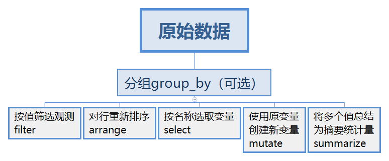
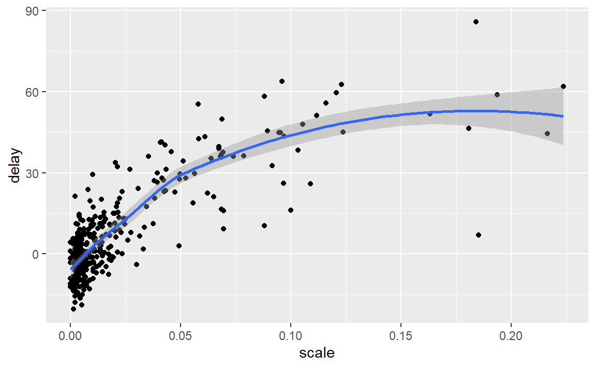
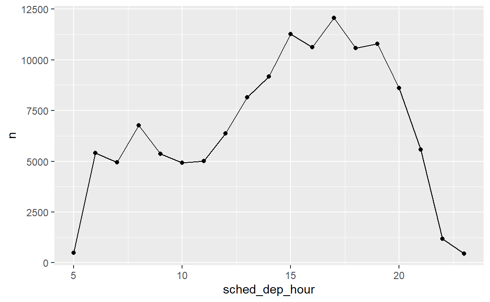

5 Data transformation
5.1 简介
原始数据总是不会让人满意，为了满足自己分析的需求，对数据进行转换不可避免。这一章我们要学习的是dplyr包，用于转换数据。
5.1.2 tibble变量类型
• int 表示整数型变量。
• dbl 表示双精度浮点数型变量，或称实数。
• chr 表示字符向量，或称字符串。
• dttm 表示日期时间（日期 + 时间）型变量。
• lgl 表示逻辑型变量，是一个仅包括 TRUE 和 FALSE 的向量。
• fctr 表示因子，R 用其来表示具有固定数目的值的分类变量。
• date 表示日期型变量
实际上就是英文缩写，比较好记。
5.1.3 dplyr基础

下面五个函数的工作方式是相同的：
第一个参数是一个数据框。
随后的参数使用变量名称（不带引号）描述了在数据框上进行的操作。
输出结果是一个新数据框。
这样的属性可以让我们在后面很方便地使用管道实现复杂的数据处理。
5.2 使用filter()筛选行
filter()的一般使用方法如下：
filter(flights,month == 1, day == 1)
#> # A tibble: 842 x 19
#> year month day dep_time sched_dep_time dep_delay arr_time sched_arr_time
#> <int> <int> <int> <int> <int> <dbl> <int> <int>
#> 1 2013 1 1 517 515 2 830 819
#> 2 2013 1 1 533 529 4 850 830
#> 3 2013 1 1 542 540 2 923 850
#> 4 2013 1 1 544 545 -1 1004 1022
#> 5 2013 1 1 554 600 -6 812 837
#> 6 2013 1 1 554 558 -4 740 728
#> # ... with 836 more rows, and 11 more variables: arr_delay <dbl>,
#> # carrier <chr>, flight <int>, tailnum <chr>, origin <chr>, dest <chr>,
#> # air_time <dbl>, distance <dbl>, hour <dbl>, minute <dbl>, time_hour <dttm>第一个参数是数据框，后面的参数是筛选数据框行的表达式。
关于筛选数据框行的表达式，我们常常需要用到：
比较运算符，>、>=、<、<=、!=（不等于）和 ==（等于）
逻辑运算符，&、|、！（而不是&&，||）
其他，像 %in%, between
5.2.1 练习
(1)找出满足以下条件的所有航班。
a.到达时间延误 2 小时或更多的航班。
filter(flights,arr_delay>=2*60)
#> # A tibble: 10,200 x 19
#> year month day dep_time sched_dep_time dep_delay arr_time sched_arr_time
#> <int> <int> <int> <int> <int> <dbl> <int> <int>
#> 1 2013 1 1 811 630 101 1047 830
#> 2 2013 1 1 848 1835 853 1001 1950
#> 3 2013 1 1 957 733 144 1056 853
#> 4 2013 1 1 1114 900 134 1447 1222
#> 5 2013 1 1 1505 1310 115 1638 1431
#> 6 2013 1 1 1525 1340 105 1831 1626
#> # ... with 10,194 more rows, and 11 more variables: arr_delay <dbl>,
#> # carrier <chr>, flight <int>, tailnum <chr>, origin <chr>, dest <chr>,
#> # air_time <dbl>, distance <dbl>, hour <dbl>, minute <dbl>, time_hour <dttm>b.飞往休斯顿（IAH 机场或 HOU 机场）的航班。
filter(flights,dest %in% c("IAH","HOU"))
#> # A tibble: 9,313 x 19
#> year month day dep_time sched_dep_time dep_delay arr_time sched_arr_time
#> <int> <int> <int> <int> <int> <dbl> <int> <int>
#> 1 2013 1 1 517 515 2 830 819
#> 2 2013 1 1 533 529 4 850 830
#> 3 2013 1 1 623 627 -4 933 932
#> 4 2013 1 1 728 732 -4 1041 1038
#> 5 2013 1 1 739 739 0 1104 1038
#> 6 2013 1 1 908 908 0 1228 1219
#> # ... with 9,307 more rows, and 11 more variables: arr_delay <dbl>,
#> # carrier <chr>, flight <int>, tailnum <chr>, origin <chr>, dest <chr>,
#> # air_time <dbl>, distance <dbl>, hour <dbl>, minute <dbl>, time_hour <dttm>c.由联合航空（United）、美利坚航空（American）或三角洲航空（Delta）运营的航班。
filter(flights,carrier %in% c("UA","AA","DL"))
#> # A tibble: 139,504 x 19
#> year month day dep_time sched_dep_time dep_delay arr_time sched_arr_time
#> <int> <int> <int> <int> <int> <dbl> <int> <int>
#> 1 2013 1 1 517 515 2 830 819
#> 2 2013 1 1 533 529 4 850 830
#> 3 2013 1 1 542 540 2 923 850
#> 4 2013 1 1 554 600 -6 812 837
#> 5 2013 1 1 554 558 -4 740 728
#> 6 2013 1 1 558 600 -2 753 745
#> # ... with 139,498 more rows, and 11 more variables: arr_delay <dbl>,
#> # carrier <chr>, flight <int>, tailnum <chr>, origin <chr>, dest <chr>,
#> # air_time <dbl>, distance <dbl>, hour <dbl>, minute <dbl>, time_hour <dttm>d.夏季（7 月、8 月和 9 月）出发的航班。
filter(flights,month %in% c(7,8,9))
#> # A tibble: 86,326 x 19
#> year month day dep_time sched_dep_time dep_delay arr_time sched_arr_time
#> <int> <int> <int> <int> <int> <dbl> <int> <int>
#> 1 2013 7 1 1 2029 212 236 2359
#> 2 2013 7 1 2 2359 3 344 344
#> 3 2013 7 1 29 2245 104 151 1
#> 4 2013 7 1 43 2130 193 322 14
#> 5 2013 7 1 44 2150 174 300 100
#> 6 2013 7 1 46 2051 235 304 2358
#> # ... with 86,320 more rows, and 11 more variables: arr_delay <dbl>,
#> # carrier <chr>, flight <int>, tailnum <chr>, origin <chr>, dest <chr>,
#> # air_time <dbl>, distance <dbl>, hour <dbl>, minute <dbl>, time_hour <dttm>e.到达时间延误超过 2 小时，但出发时间没有延误的航班。
filter(flights,arr_delay>=2*60,dep_delay<=0)
#> # A tibble: 29 x 19
#> year month day dep_time sched_dep_time dep_delay arr_time sched_arr_time
#> <int> <int> <int> <int> <int> <dbl> <int> <int>
#> 1 2013 1 27 1419 1420 -1 1754 1550
#> 2 2013 10 7 1350 1350 0 1736 1526
#> 3 2013 10 7 1357 1359 -2 1858 1654
#> 4 2013 10 16 657 700 -3 1258 1056
#> 5 2013 11 1 658 700 -2 1329 1015
#> 6 2013 3 18 1844 1847 -3 39 2219
#> # ... with 23 more rows, and 11 more variables: arr_delay <dbl>, carrier <chr>,
#> # flight <int>, tailnum <chr>, origin <chr>, dest <chr>, air_time <dbl>,
#> # distance <dbl>, hour <dbl>, minute <dbl>, time_hour <dttm>f.延误至少 1 小时，但飞行过程弥补回 30 分钟的航班。
也就是，出发时间延误超1小时，但出发时间延误-到达时间延误>=30min
filter(flights,dep_delay>=1*60,dep_delay-arr_delay>=30)
#> # A tibble: 2,074 x 19
#> year month day dep_time sched_dep_time dep_delay arr_time sched_arr_time
#> <int> <int> <int> <int> <int> <dbl> <int> <int>
#> 1 2013 1 1 1716 1545 91 2140 2039
#> 2 2013 1 1 2205 1720 285 46 2040
#> 3 2013 1 1 2326 2130 116 131 18
#> 4 2013 1 3 1503 1221 162 1803 1555
#> 5 2013 1 3 1821 1530 171 2131 1910
#> 6 2013 1 3 1839 1700 99 2056 1950
#> # ... with 2,068 more rows, and 11 more variables: arr_delay <dbl>,
#> # carrier <chr>, flight <int>, tailnum <chr>, origin <chr>, dest <chr>,
#> # air_time <dbl>, distance <dbl>, hour <dbl>, minute <dbl>, time_hour <dttm>g.出发时间在午夜和早上 6 点之间（包括 0 点和 6 点）的航班。
filter(flights,dep_time>=0&dep_time<=600)
#> # A tibble: 9,344 x 19
#> year month day dep_time sched_dep_time dep_delay arr_time sched_arr_time
#> <int> <int> <int> <int> <int> <dbl> <int> <int>
#> 1 2013 1 1 517 515 2 830 819
#> 2 2013 1 1 533 529 4 850 830
#> 3 2013 1 1 542 540 2 923 850
#> 4 2013 1 1 544 545 -1 1004 1022
#> 5 2013 1 1 554 600 -6 812 837
#> 6 2013 1 1 554 558 -4 740 728
#> # ... with 9,338 more rows, and 11 more variables: arr_delay <dbl>,
#> # carrier <chr>, flight <int>, tailnum <chr>, origin <chr>, dest <chr>,
#> # air_time <dbl>, distance <dbl>, hour <dbl>, minute <dbl>, time_hour <dttm>(2)dplyr中对筛选有帮助的另一个函数是between()。它的作用是什么？你能使用这个函数来简化解决前面问题的代码吗？
用于实现letf<=x<=right的表达式。上面的g也可以写成
filter(flights,between(dep_time,0,600))
#> # A tibble: 9,344 x 19
#> year month day dep_time sched_dep_time dep_delay arr_time sched_arr_time
#> <int> <int> <int> <int> <int> <dbl> <int> <int>
#> 1 2013 1 1 517 515 2 830 819
#> 2 2013 1 1 533 529 4 850 830
#> 3 2013 1 1 542 540 2 923 850
#> 4 2013 1 1 544 545 -1 1004 1022
#> 5 2013 1 1 554 600 -6 812 837
#> 6 2013 1 1 554 558 -4 740 728
#> # ... with 9,338 more rows, and 11 more variables: arr_delay <dbl>,
#> # carrier <chr>, flight <int>, tailnum <chr>, origin <chr>, dest <chr>,
#> # air_time <dbl>, distance <dbl>, hour <dbl>, minute <dbl>, time_hour <dttm>(3)dep_time 有缺失值的航班有多少？其他变量的缺失值情况如何？这样的行表示什么情况？
filter(flights,is.na(dep_time))
#> # A tibble: 8,255 x 19
#> year month day dep_time sched_dep_time dep_delay arr_time sched_arr_time
#> <int> <int> <int> <int> <int> <dbl> <int> <int>
#> 1 2013 1 1 NA 1630 NA NA 1815
#> 2 2013 1 1 NA 1935 NA NA 2240
#> 3 2013 1 1 NA 1500 NA NA 1825
#> 4 2013 1 1 NA 600 NA NA 901
#> 5 2013 1 2 NA 1540 NA NA 1747
#> 6 2013 1 2 NA 1620 NA NA 1746
#> # ... with 8,249 more rows, and 11 more variables: arr_delay <dbl>,
#> # carrier <chr>, flight <int>, tailnum <chr>, origin <chr>, dest <chr>,
#> # air_time <dbl>, distance <dbl>, hour <dbl>, minute <dbl>, time_hour <dttm>dep_delay,arr_time,arr_delay同时缺失，表示航班取消。
(4)为什么 NA ^ 0 的值不是 NA ？为什么 NA | TRUE 的值不是 NA ？为什么 FALSE & NA 的值不是 NA ？你能找出一般规律吗？（NA * 0 则是精妙的反例！）
个人觉得，因为NA表示缺失值，所有有可能取到可取的任意值。
对于NA^0，NA*0等数学运算，NA可以取任意数值，对于NA所取任意值，如果表达式的值都唯一，那么这个就是该表达式的值，若不唯一，则应为NA。由于对于任意数值，它的0次幂都为1（包括Inf、-Inf），所以NA^0==1，而由于Inf*0=NaN，当NA取1时NA*0==0，不唯一，故NA * 0=NA。
对于NA | TRUE，FALSE & NA，NA可以取TRUE或者FALSE，无论取什么值，两个表达式的值都唯一（分别为TRUE，FALSE），故它们的值都不是NA。
5.3 使用arrange()排列行
工作方式：
arrange(flights,year,month,day)
#> # A tibble: 336,776 x 19
#> year month day dep_time sched_dep_time dep_delay arr_time sched_arr_time
#> <int> <int> <int> <int> <int> <dbl> <int> <int>
#> 1 2013 1 1 517 515 2 830 819
#> 2 2013 1 1 533 529 4 850 830
#> 3 2013 1 1 542 540 2 923 850
#> 4 2013 1 1 544 545 -1 1004 1022
#> 5 2013 1 1 554 600 -6 812 837
#> 6 2013 1 1 554 558 -4 740 728
#> # ... with 336,770 more rows, and 11 more variables: arr_delay <dbl>,
#> # carrier <chr>, flight <int>, tailnum <chr>, origin <chr>, dest <chr>,
#> # air_time <dbl>, distance <dbl>, hour <dbl>, minute <dbl>, time_hour <dttm>将数据框flights的行按照year,month,day的值升序排序，返回新的数据框。
使用 desc() 可以按列进行降序排序：
arrange(flights,desc(dep_delay))
#> # A tibble: 336,776 x 19
#> year month day dep_time sched_dep_time dep_delay arr_time sched_arr_time
#> <int> <int> <int> <int> <int> <dbl> <int> <int>
#> 1 2013 1 9 641 900 1301 1242 1530
#> 2 2013 6 15 1432 1935 1137 1607 2120
#> 3 2013 1 10 1121 1635 1126 1239 1810
#> 4 2013 9 20 1139 1845 1014 1457 2210
#> 5 2013 7 22 845 1600 1005 1044 1815
#> 6 2013 4 10 1100 1900 960 1342 2211
#> # ... with 336,770 more rows, and 11 more variables: arr_delay <dbl>,
#> # carrier <chr>, flight <int>, tailnum <chr>, origin <chr>, dest <chr>,
#> # air_time <dbl>, distance <dbl>, hour <dbl>, minute <dbl>, time_hour <dttm>此外，缺失值总是排在最后。
5.3.1 练习
(1)如何使用 arrange() 将缺失值排在最前面？（提示：使用 is.na()。）
df <- tibble(x = c(5, 2, NA))
arrange(df,desc(is.na(df)))
#> # A tibble: 3 x 1
#> x
#> <dbl>
#> 1 NA
#> 2 5
#> 3 2不知道这算不算一个好的办法。但是要改变非缺失值顺序的同时又把缺失值放在前面，就有点复杂了，需要arrange两次。
(2)对flights排序以找出延误时间最长的航班。找出出发时间最早的航班。
arrange(flights,desc(arr_delay))
#> # A tibble: 336,776 x 19
#> year month day dep_time sched_dep_time dep_delay arr_time sched_arr_time
#> <int> <int> <int> <int> <int> <dbl> <int> <int>
#> 1 2013 1 9 641 900 1301 1242 1530
#> 2 2013 6 15 1432 1935 1137 1607 2120
#> 3 2013 1 10 1121 1635 1126 1239 1810
#> 4 2013 9 20 1139 1845 1014 1457 2210
#> 5 2013 7 22 845 1600 1005 1044 1815
#> 6 2013 4 10 1100 1900 960 1342 2211
#> # ... with 336,770 more rows, and 11 more variables: arr_delay <dbl>,
#> # carrier <chr>, flight <int>, tailnum <chr>, origin <chr>, dest <chr>,
#> # air_time <dbl>, distance <dbl>, hour <dbl>, minute <dbl>, time_hour <dttm>arrange(flights,dep_time)
#> # A tibble: 336,776 x 19
#> year month day dep_time sched_dep_time dep_delay arr_time sched_arr_time
#> <int> <int> <int> <int> <int> <dbl> <int> <int>
#> 1 2013 1 13 1 2249 72 108 2357
#> 2 2013 1 31 1 2100 181 124 2225
#> 3 2013 11 13 1 2359 2 442 440
#> 4 2013 12 16 1 2359 2 447 437
#> 5 2013 12 20 1 2359 2 430 440
#> 6 2013 12 26 1 2359 2 437 440
#> # ... with 336,770 more rows, and 11 more variables: arr_delay <dbl>,
#> # carrier <chr>, flight <int>, tailnum <chr>, origin <chr>, dest <chr>,
#> # air_time <dbl>, distance <dbl>, hour <dbl>, minute <dbl>, time_hour <dttm>(3)对flights排序以找出速度最快的航班。
需要根据distance（距离）以及air_time（飞行时间）去计算速度，并排序：
arrange(flights,desc(distance/air_time))
#> # A tibble: 336,776 x 19
#> year month day dep_time sched_dep_time dep_delay arr_time sched_arr_time
#> <int> <int> <int> <int> <int> <dbl> <int> <int>
#> 1 2013 5 25 1709 1700 9 1923 1937
#> 2 2013 7 2 1558 1513 45 1745 1719
#> 3 2013 5 13 2040 2025 15 2225 2226
#> 4 2013 3 23 1914 1910 4 2045 2043
#> 5 2013 1 12 1559 1600 -1 1849 1917
#> 6 2013 11 17 650 655 -5 1059 1150
#> # ... with 336,770 more rows, and 11 more variables: arr_delay <dbl>,
#> # carrier <chr>, flight <int>, tailnum <chr>, origin <chr>, dest <chr>,
#> # air_time <dbl>, distance <dbl>, hour <dbl>, minute <dbl>, time_hour <dttm>(4)哪个航班的飞行时间最长？哪个最短？
arrange(flights,air_time)
#> # A tibble: 336,776 x 19
#> year month day dep_time sched_dep_time dep_delay arr_time sched_arr_time
#> <int> <int> <int> <int> <int> <dbl> <int> <int>
#> 1 2013 1 16 1355 1315 40 1442 1411
#> 2 2013 4 13 537 527 10 622 628
#> 3 2013 12 6 922 851 31 1021 954
#> 4 2013 2 3 2153 2129 24 2247 2224
#> 5 2013 2 5 1303 1315 -12 1342 1411
#> 6 2013 2 12 2123 2130 -7 2211 2225
#> # ... with 336,770 more rows, and 11 more variables: arr_delay <dbl>,
#> # carrier <chr>, flight <int>, tailnum <chr>, origin <chr>, dest <chr>,
#> # air_time <dbl>, distance <dbl>, hour <dbl>, minute <dbl>, time_hour <dttm>arrange(flights,desc(air_time))
#> # A tibble: 336,776 x 19
#> year month day dep_time sched_dep_time dep_delay arr_time sched_arr_time
#> <int> <int> <int> <int> <int> <dbl> <int> <int>
#> 1 2013 3 17 1337 1335 2 1937 1836
#> 2 2013 2 6 853 900 -7 1542 1540
#> 3 2013 3 15 1001 1000 1 1551 1530
#> 4 2013 3 17 1006 1000 6 1607 1530
#> 5 2013 3 16 1001 1000 1 1544 1530
#> 6 2013 2 5 900 900 0 1555 1540
#> # ... with 336,770 more rows, and 11 more variables: arr_delay <dbl>,
#> # carrier <chr>, flight <int>, tailnum <chr>, origin <chr>, dest <chr>,
#> # air_time <dbl>, distance <dbl>, hour <dbl>, minute <dbl>, time_hour <dttm>5.4 使用select()选择列
使用方法：
other一般可以有：
多个变量名标量
变量名向量
辅助函数，用于匹配变量名，或者将变量移到数据框前面（
everything()）
位于前面的变量名参数的优先级更高，如果跟后面的变量名参数冲突（相同）会覆盖它。（可以参考练习(2)）。
5.4.1 练习
(1)从flights数据集中选择dep_time、dep_delay、arr_time和arr_delay，通过头脑风暴找出尽可能多的方法。
select(flights,dep_time,dep_delay,arr_time,arr_delay) # 原始方法
select(flights,dep_time:arr_delay,-c(sched_dep_time,sched_arr_time)) # 向量方法
select(flights,dep_time:arr_delay,-starts_with("sched")) # 利用辅助函数匹配需要舍弃的变量名
select(flights,starts_with("dep"),starts_with("arr")) # 直接匹配变量名
select(flights,matches("^(dep|arr)")) # 利用正则匹配(2)如果在select()函数中多次计入一个变量名，那么会发生什么情况？
select(flights,dep_time,dep_time)
#> # A tibble: 336,776 x 1
#> dep_time
#> <int>
#> 1 517
#> 2 533
#> 3 542
#> 4 544
#> 5 554
#> 6 554
#> # ... with 336,770 more rows只会选取一列。这就解释了为什么：
select(flights, time_hour, air_time, everything())
#> # A tibble: 336,776 x 19
#> time_hour air_time year month day dep_time sched_dep_time
#> <dttm> <dbl> <int> <int> <int> <int> <int>
#> 1 2013-01-01 05:00:00 227 2013 1 1 517 515
#> 2 2013-01-01 05:00:00 227 2013 1 1 533 529
#> 3 2013-01-01 05:00:00 160 2013 1 1 542 540
#> 4 2013-01-01 05:00:00 183 2013 1 1 544 545
#> 5 2013-01-01 06:00:00 116 2013 1 1 554 600
#> 6 2013-01-01 05:00:00 150 2013 1 1 554 558
#> # ... with 336,770 more rows, and 12 more variables: dep_delay <dbl>,
#> # arr_time <int>, sched_arr_time <int>, arr_delay <dbl>, carrier <chr>,
#> # flight <int>, tailnum <chr>, origin <chr>, dest <chr>, distance <dbl>,
#> # hour <dbl>, minute <dbl>会把变量移到前面。
(3)one_of()函数的作用是什么？为什么它结合以下向量使用时非常有用？
select(flights,one_of(vars))
#> Warning: Unknown columns: `hello`
#> # A tibble: 336,776 x 5
#> year month day dep_delay arr_delay
#> <int> <int> <int> <dbl> <dbl>
#> 1 2013 1 1 2 11
#> 2 2013 1 1 4 20
#> 3 2013 1 1 2 33
#> 4 2013 1 1 -1 -18
#> 5 2013 1 1 -6 -25
#> 6 2013 1 1 -4 12
#> # ... with 336,770 more rows选取数据框中包含在vars中的变量。
(4)以下代码的运行结果是否出乎意料？选择辅助函数处理大小写的默认方式是什么？如何改变默认方式？
select(flights, contains("TIME"))
#> # A tibble: 336,776 x 6
#> dep_time sched_dep_time arr_time sched_arr_time air_time time_hour
#> <int> <int> <int> <int> <dbl> <dttm>
#> 1 517 515 830 819 227 2013-01-01 05:00:00
#> 2 533 529 850 830 227 2013-01-01 05:00:00
#> 3 542 540 923 850 160 2013-01-01 05:00:00
#> 4 544 545 1004 1022 183 2013-01-01 05:00:00
#> 5 554 600 812 837 116 2013-01-01 06:00:00
#> 6 554 558 740 728 150 2013-01-01 05:00:00
#> # ... with 336,770 more rows有点出乎意料…查阅文档可以知道，那几个匹配的函数都有参数ignore.case（忽略大小写），默认为TRUE，修改一下就行了。
5.5 使用mutate()添加新变量
我们可以使用mutate()添加新变量，也就是新的列，它往往是原有列的函数。
mutate()总是将新列添加在数据集的最后一旦创建，新列就可以立即使用。不用等到返回数据框再使用新列。
如果只想保留新变量，可以使用
transmute()函数。使用mutate()函数会保留原数据框的所有列，新列加在后面。
5.5.1 常用创建函数
创建新变量的多种函数可供同mutate()一同使用。最重要的一点是，这种函数必须是向
量化的。这个不难理解，毕竟我们是输入原有列（向量）而得到新列（向量）。
主要有：
算术运算符：+、-、*、/、^
模运算符：%/%（整除） 和 %%（求余）
对数函数：log()、log2() 和 log10()
偏移函数：lead()、lag()
累加和滚动聚合：cumsum()、cumprod()、commin() 和 cummax()，以及cummean()
逻辑比较：<、<=、>、>= 和 !=
排秩：min_rank()、 row_number()、dense_rank()、percent_rank()、cume_dist()和 ntile()
5.5.2 练习
(1)虽然现在的dep_time和sched_dep_time变量方便阅读，但不适合计算，因为它们实际上并不是连续型数值。将它们转换成一种更方便的表示形式，即从午夜开始的分钟数。
transmute(flights,
dep_min=(dep_time %/% 100)*60+(dep_time %% 100),
sched_dep_min = (sched_dep_time %/% 100)*60+(sched_dep_time %% 100))
#> # A tibble: 336,776 x 2
#> dep_min sched_dep_min
#> <dbl> <dbl>
#> 1 317 315
#> 2 333 329
#> 3 342 340
#> 4 344 345
#> 5 354 360
#> 6 354 358
#> # ... with 336,770 more rows(2)比较 air_time 和arr_time–dep_time。你期望看到什么？实际又看到了什么？如何解决这个问题？
transmute(flights,air_time=air_time,t=arr_time-dep_time)
#> # A tibble: 336,776 x 2
#> air_time t
#> <dbl> <int>
#> 1 227 313
#> 2 227 317
#> 3 160 381
#> 4 183 460
#> 5 116 258
#> 6 150 186
#> # ... with 336,770 more rows因为arr_time,dep_time的格式都是HMM或者HHMM，air_time格式是分钟，所以前者直接相减是不会等于后者。一种方法把它们都转换成分钟。
flights%>%
transmute(air_time,
arr_min = (arr_time %/% 100)*60+(arr_time %% 100),
dep_min = (dep_time %/% 100)*60+(dep_time %% 100),
t_min = arr_min-dep_min
)
#> # A tibble: 336,776 x 4
#> air_time arr_min dep_min t_min
#> <dbl> <dbl> <dbl> <dbl>
#> 1 227 510 317 193
#> 2 227 530 333 197
#> 3 160 563 342 221
#> 4 183 604 344 260
#> 5 116 492 354 138
#> 6 150 460 354 106
#> # ... with 336,770 more rows本以为air_time会与t_min相等，但是并不是…大于小于都有，这就很奇怪了，特别是air_time大于t_min这是啥意思…
update:因为出发和到达时间都是当地时间，所以可能不同。可以将时间转为标准时间再计算。
(4)使用排秩函数找出 10 个延误时间最长的航班。如何处理名次相同的情况？仔细阅读
min_rank() 的帮助文件。
flights%>%
mutate(rank=min_rank(desc(arr_delay)))%>%
filter(rank<=10)%>%
arrange(rank)
#> # A tibble: 10 x 20
#> year month day dep_time sched_dep_time dep_delay arr_time sched_arr_time
#> <int> <int> <int> <int> <int> <dbl> <int> <int>
#> 1 2013 1 9 641 900 1301 1242 1530
#> 2 2013 6 15 1432 1935 1137 1607 2120
#> 3 2013 1 10 1121 1635 1126 1239 1810
#> 4 2013 9 20 1139 1845 1014 1457 2210
#> 5 2013 7 22 845 1600 1005 1044 1815
#> 6 2013 4 10 1100 1900 960 1342 2211
#> # ... with 4 more rows, and 12 more variables: arr_delay <dbl>, carrier <chr>,
#> # flight <int>, tailnum <chr>, origin <chr>, dest <chr>, air_time <dbl>,
#> # distance <dbl>, hour <dbl>, minute <dbl>, time_hour <dttm>, rank <int>(5)1:3 + 1:10会返回什么？为什么？
相当于这样，长度不一样的向量运算时，短向量会“广播”：
(6)R提供了哪些三角函数？
利用
可以得到。
5.6 使用summarize()进行分组摘要
5.6.1 使用管道组合多种操作
x %>% f(y)会转换成f(x,y)，依此类推。
在RStudio中管道%>%的默认快捷键是Ctrl+Shift+M
5.6.2 练习
(1)通过头脑风暴，至少找出5种方法来确定一组航班的典型延误特征。思考以下场景。
• 一架航班 50% 的时间会提前 15 分钟，50% 的时间会延误 15 分钟。
• 一架航班总是会延误 10 分钟。
• 一架航班 50% 的时间会提前 30 分钟，50% 的时间会延误 30 分钟。
• 一架航班 99% 的时间会准时，1% 的时间会延误 2 个小时。
哪一种更重要：到达延误还是出发延误？
那当然是到达延误更重要。
(2)找出另外一种方法，这种方法要可以给出与 not_cancelled %>% count(dest)和not_cancelled %>% count(tailnum, wt = distance)同样的输出（不能使用 count()）。
not_cancelled %>% count(dest)
#> # A tibble: 104 x 2
#> dest n
#> <chr> <int>
#> 1 ABQ 254
#> 2 ACK 264
#> 3 ALB 418
#> 4 ANC 8
#> 5 ATL 16837
#> 6 AUS 2411
#> # ... with 98 more rows
not_cancelled %>%
group_by(dest) %>%
summarise(n=n())
#> # A tibble: 104 x 2
#> dest n
#> <chr> <int>
#> 1 ABQ 254
#> 2 ACK 264
#> 3 ALB 418
#> 4 ANC 8
#> 5 ATL 16837
#> 6 AUS 2411
#> # ... with 98 more rowsnot_cancelled %>% count(tailnum, wt = distance)
#> # A tibble: 4,037 x 2
#> tailnum n
#> <chr> <dbl>
#> 1 D942DN 3418
#> 2 N0EGMQ 239143
#> 3 N10156 109664
#> 4 N102UW 25722
#> 5 N103US 24619
#> 6 N104UW 24616
#> # ... with 4,031 more rows
not_cancelled %>%
group_by(tailnum) %>%
summarise(n=sum(distance))
#> # A tibble: 4,037 x 2
#> tailnum n
#> <chr> <dbl>
#> 1 D942DN 3418
#> 2 N0EGMQ 239143
#> 3 N10156 109664
#> 4 N102UW 25722
#> 5 N103US 24619
#> 6 N104UW 24616
#> # ... with 4,031 more rows(3)我们对已取消航班的定义(is.na(dep_delay))|(is.na(arr_delay))稍有欠佳。为什么？哪一列才是最重要的？
我觉得，dep_time（出发时间）最重要，出发时间缺失明确表示航班取消。
(4)查看每天取消的航班数量。其中存在模式吗？已取消航班的比例与平均延误时间有关 系吗？
flights %>%
group_by(year,month,day) %>%
summarise(scale = mean(is.na(dep_time)),
delay = mean(arr_delay,na.rm = T)) %>%
filter(scale<0.5) %>% # 去除两个离群点
ggplot(mapping = aes(x=scale,y=delay)) +
geom_point()+
geom_smooth()
可以看到，已取消航班的比例升高，平均延误时间先较快增加随之变缓。
(5)哪个航空公司的延误情况最严重？挑战：你能否分清这是由于糟糕的机场设备，还是航空公司的问题？为什么能？为什么不能？（提示：考虑一下 flights %>% group_by(carrier, dest) %>% summarize(n())。）
不太明白…占个坑先。
(6)计算每架飞机在第一次延误超过1小时前的飞行次数。
有比较麻烦的做法…
(7)count()函数中的sort参数的作用是什么？何时应该使用这个参数？
没设置之前是这样的：
not_cancelled %>% count(dest)
#> # A tibble: 104 x 2
#> dest n
#> <chr> <int>
#> 1 ABQ 254
#> 2 ACK 264
#> 3 ALB 418
#> 4 ANC 8
#> 5 ATL 16837
#> 6 AUS 2411
#> # ... with 98 more rows设置之后：
not_cancelled %>% count(dest,sort = T)
#> # A tibble: 104 x 2
#> dest n
#> <chr> <int>
#> 1 ATL 16837
#> 2 ORD 16566
#> 3 LAX 16026
#> 4 BOS 15022
#> 5 MCO 13967
#> 6 CLT 13674
#> # ... with 98 more rows返回数据框的行会按照计数的大小进行降序排序。
5.7 分组新变量（和筛选器）
将分组与与mutate()和filter()函数结合。
5.7.1 练习
(2)哪一架飞机（用机尾编号来识别，tailnum）具有最差的准点记录？
flights %>%
group_by(tailnum) %>%
transmute(delay = mean(arr_delay,na.rm = T)) %>%
arrange(desc(delay))
#> # A tibble: 336,776 x 2
#> # Groups: tailnum [4,044]
#> tailnum delay
#> <chr> <dbl>
#> 1 N844MH 320
#> 2 N911DA 294
#> 3 N922EV 276
#> 4 N587NW 264
#> 5 N851NW 219
#> 6 N928DN 201
#> # ... with 336,770 more rows(3)如果想要尽量避免航班延误，那么应该在一天中的哪个时间搭乘飞机？
假如从纽约出发，不妨以每辆航班计划出发的时间小时作分组，然后统计该小时内航班延误数量。
not_cancelled %>%
mutate(sched_dep_hour = sched_dep_time %/% 100) %>%
group_by(sched_dep_hour) %>%
summarise(n=sum(dep_delay>0)) %>%
ggplot(mapping = aes(x=sched_dep_hour,y=n))+
geom_line()+
geom_point()
#> `summarise()` ungrouping output (override with `.groups` argument)
(4)计算每个目的地的延误总时间的分钟数，以及每架航班到每个目的地的延误时间比例。
not_cancelled %>%
group_by(dest) %>%
mutate(destsum = sum(arr_delay)) %>%
group_by(dest,tailnum) %>%
mutate(tailnumsum = sum(arr_delay)) %>%
mutate(delayscale = tailnumsum/destsum) %>%
select(dest,destsum,tailnum,tailnumsum,delayscale) %>%
arrange(dest)
#> # A tibble: 327,346 x 5
#> # Groups: dest, tailnum [44,173]
#> dest destsum tailnum tailnumsum delayscale
#> <chr> <dbl> <chr> <dbl> <dbl>
#> 1 ABQ 1113 N554JB -98 -0.0881
#> 2 ABQ 1113 N607JB 97 0.0872
#> 3 ABQ 1113 N591JB 12 0.0108
#> 4 ABQ 1113 N662JB -40 -0.0359
#> 5 ABQ 1113 N580JB 9 0.00809
#> 6 ABQ 1113 N507JB 8 0.00719
#> # ... with 327,340 more rows就不区分延误时间的正负了。
(5)延误通常是由临时原因造成的：即使最初引起延误的问题已经解决，但因为要让前面的航班先起飞，所以后面的航班也会延误。使用lag()函数探究一架航班延误与前一架航班延误之间的关系。
探究一下前一架航班出发延误与后一架航班出发延误时间上的关系：
没弄明白航班的含义，先待续。
(6)查看每个目的地。你能否发现有些航班的速度快得可疑？（也就是说，这些航班的数据可能是错误的。）计算出到目的地的最短航线的飞行时间。哪架航班在空中的延误时间 最长？